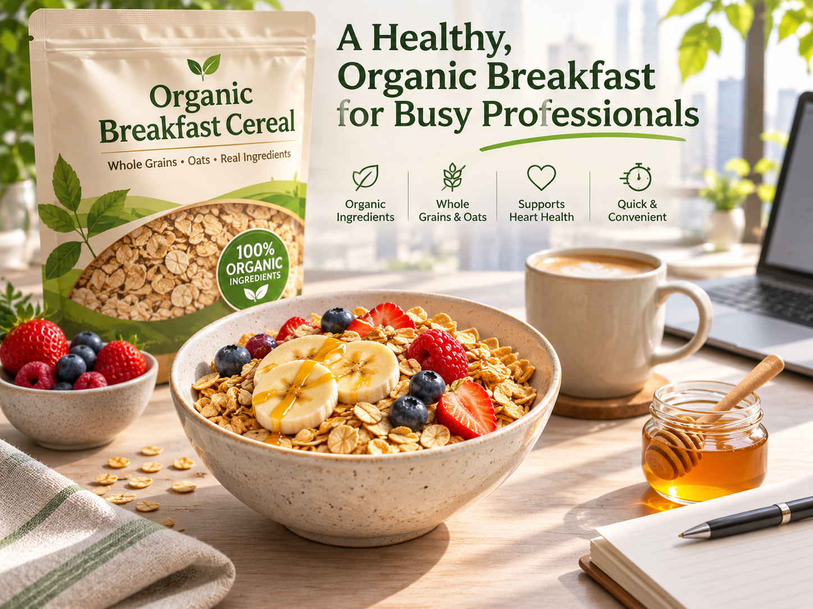

Start Your Busy Morning Right with Organic Breakfast Cereals
For busy working professionals, mornings can be a whirlwind of rushing to get ready, grabbing coffee, and trying to squeeze in a nutritious breakfast. Often, the convenience of quick, unhealthy options wins out over the desire for a balanced, satisfying start to the day. Organic Breakfast Cereals understand this struggle and offer a solution that doesn’t compromise on taste, nutrition, or convenience.

Personalized Social Posts
Tailored Benefits
- Time-Saving: Quick and easy to prepare, perfect for those rushed mornings.
- Nutritionally Balanced: Packed with organic whole grains and natural sweeteners, providing sustained energy.
- Delicious Taste: Lightly sweetened with organic fruits or honey for a delightful crunch.
- Health-Conscious: Free from artificial additives, catering to those who prioritize wellness.
.png)
Specific Use Cases
- Quick Morning Prep: Simply pour into a bowl and top with your favorite milk or yogurt for an instant, nutritious breakfast.
- On-the-Go Snacking: Pack a portion in a container for a healthy snack during work breaks.
- Post-Workout Fuel: Enjoy as a post-exercise snack to replenish energy and nutrients.
- Office-Friendly: Keep a stash at your desk for a quick, healthy pick-me-up mid-morning.
Personal Testimonials
"As a busy professional, I’m always looking for ways to streamline my morning routine without sacrificing nutrition. Organic Breakfast Cereals have been a game-changer. They’re quick, delicious, and give me the energy I need to start my day strong." – Sarah, Marketing Manager
"I used to rely on sugary granola bars to get me through the morning, but Organic Breakfast Cereals have completely transformed my breakfast game. They’re satisfying, nutritious, and taste amazing. Plus, knowing they’re made with organic ingredients gives me peace of mind." – Mike, Software Developer
"Working long hours means I often skip breakfast, but Organic Breakfast Cereals make it easy to grab something healthy on the go. They’re the perfect blend of convenience and nutrition." – Lisa, Project Coordinator